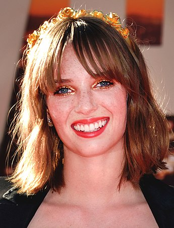

Stranger Things
Stranger Things é uma série de televisão via streaming estadunidense dos gêneros ficção científica, terror, suspense e drama adolescente, criada, escrita e dirigida pelos irmãos Matt e Ross Duffer para a plataforma Netflix. Os irmãos Duffer, Shawn Levy e Dan Cohen são também os produtores executivos.[1][2] A série apresenta em seu elenco os nomes de Winona Ryder, David Harbour, Finn Wolfhard, Millie Bobby Brown, Gaten Matarazzo, Caleb McLaughlin, Noah Schnapp, Natalia Dyer, Charlie Heaton, Joe Keery, Cara Buono e Matthew Modine, enquanto Sadie Sink, Dacre Montgomery, Sean Astin, Paul Reiser, Maya Hawke, Priah Ferguson e Brett Gelman foram incluídos no elenco em temporadas posteriores.
A primeira temporada da série estreou em 15 de julho de 2016[3] e se passa na cidade fictícia de Hawkins, Indiana, Estados Unidos, durante a década de 1980, quando um menino de doze anos chamado Will Byers desaparece misteriosamente. Pouco depois, Onze, uma garota aparentemente fugitiva com poderes telecinéticos, conhece Mike, Dustin e Lucas, amigos de Will, e os ajuda na busca por Will.[4][5] A segunda temporada estreou em 27 de outubro de 2017 e se passa um ano após os eventos da primeira temporada. É abordado as tentativas dos personagens de retornar à normalidade e das consequências que persistem desde o ano anterior, onde Will fica com sequelas do mundo invertido. A terceira temporada estreou em 4 de julho de 2019 e é ambientada no verão americano de 1985, onde os personagens precisam lidar com o início da adolescência e de novos eventos sobrenaturais após a abertura de um shopping na cidade e a chegada de uma perigosa equipe russa que planeja abrir o portal do mundo invertido.
Em 30 de setembro de 2019, a Netflix renovou a série para uma quarta temporada, posteriormente a Netflix confirmou a estreia da quarta temporada, dividida em 2 volumes, que estrearam em 27 de maio 2022 e 1 de julho de 2022. Também foi confirmado que a quinta temporada será a última da série.
Os irmãos Duffer desenvolveram a premissa da série em meados de 2015, e no roteiro original, o projeto se chamaria Montauk, e seria ambientado na cidade de mesmo nome localizada em Nova Iorque, abordando as teorias da conspiração envolvendo os experimentos secretos do governo americano em uma base militar na cidade no início da década de 1980. Após a definição do roteiro, os irmãos Duffer incluíram várias referências aos elementos culturais daquela década, como filmes de ficção científica, terror sobrenatural e ação e aventura, bem como videogames, animes e música, além de inúmeras referências a obras de Steven Spielberg, John Carpenter e Stephen King, considerados as grandes inspirações dos irmãos Duffer para a realização do projeto. Eles também se inspiraram em estranhos experimentos que aconteceram durante a Guerra Fria e em teorias da conspiração do mundo real envolvendo experimentos secretos do governo.
Após seu lançamento, Stranger Things recebeu aclamação do publico e da crítica especializada, que elogiaram a caracterização, ritmo, atmosfera, atuações, trilha sonora, direção, roteiro e homenagens a filmes do gênero da década de 1980. Devido sua popularidade, a série acabou gerando alguns produtos, como livros, brinquedos, videogames e histórias em quadrinhos. A série também recebeu vários prêmios e indicações em premiações, como Emmy Awards, Globo de Ouro, British Academy Television Award, entre outros.
Resumo
| Temporada | Episódios | Originalmente Lançado | |
|---|---|---|---|
| 1 | 8 | 15 de julho de 2016 | |
| 2 | 9 | 27 de outubro de 2017 | |
| 3 | 8 | 4 de julho de 2019 | |
| 4 | 9 | 7 | 27 de maio de 2022 |
| 2 | 1 de julho de 2022 | ||
1ª temporada (2016)
Em novembro de 1983, o estudante Will Byers é abduzido por uma criatura de uma realidade alternativa chamada "Mundo Invertido", causando mistério e pavor aos habitantes de Hawkis, Indiana. Sua mãe, Joyce Byers, tenta encontrar seu paradeiro com a ajuda do xerife Jim Hopper, enquanto Mike Wheeler, Dustin Henderson e Lucas Sinclair fazem outra investigação para encontrá-lo, porém são surpreendidos quando uma estranha garota com poderes telecinéticos chamada Onze aparece na cidade. Onze é uma fugitiva do Laboratório Nacional de Hawkins, localizado nas proximidades, que faz ostensivamente pesquisas científicas para o Departamento de Energia dos Estados Unidos e realiza secretamente experimentos paranormais e sobrenaturais em humanos.
2ª temporada (2017)
Em outubro de 1984, Will foi resgatado, mas poucos sabem dos detalhes dos acontecimentos. Quando é descoberto que Will ainda está sendo influenciado por entidades do Mundo Invertido, principalmente pela figura de uma criatura chamada Devorador de Mentes, seus amigos e familiares se juntam para salvar Will da criatura e fechar o portal do mundo invertido.[
3ª temporada (2019)
Em julho de 1985, as crianças precisam lidar com os dilemas da adolescência, como romances e amizades. Um dos novos pontos da cidade é o shopping Starcourt Mall, que começa a atrair atenção dos moradores de Hawkins, colocando a maioria das outras lojas fora do mercado. Hopper fica cada vez mais preocupado com o relacionamento de Onze e Mike enquanto ainda tenta cuidar de Joyce. Sem o conhecimento da cidade, um laboratório secreto soviético está escondido nas profundezas do shopping, procurando abrir a porta de entrada para o Mundo Invertido, permitindo que as entidades de lá possuam pessoas em Hawkins e criando um novo horror para lugar.
4ª temporada (2022)
Em março de 1986, Depois de seis meses do conflito de Starcourt, a cidade foi tomada por um rastro de terror e destruição. Os efeitos da batalha são sentidos pelo grupo de amigos, que se separam pela primeira vez, enquanto passam por um período turbulento típico da adolescência na escola. Em um momento em que todos estão mais vulneráveis, uma nova ameaça sobrenatural surge. No entanto, o novo mistério pode conter a resposta para acabar com os terrores do Mundo Invertido.
Elenco e personagens
A lista abaixo contém os atores que foram creditados como regulares da série. Atores que são apenas recorrentes e convidados são listados nas páginas individuais das temporadas.
- Winona Ryders como Joyce Byers: a mãe de Will e Jonathan Byers. Ela é divorciada de Lonnie Byers. Seu filho Will desaparece, iniciando a trama. Na segunda temporada, ela mantém um relacionamento com seu antigo colega de classe, Bob, embora ela e o delegado Hopper tenham sentimentos um pelo outro.
- David Harbour
 como Jim Hopper: delegado do Departamento de Polícia de Hawkins. Depois que sua filha, ainda criança, morreu de câncer, ele se divorciou e tornou-se alcoólatra. Ele demonstra sua responsabilidade e capacidade ao salvar o filho de Joyce, e ao adotar Onze como sua filha.
como Jim Hopper: delegado do Departamento de Polícia de Hawkins. Depois que sua filha, ainda criança, morreu de câncer, ele se divorciou e tornou-se alcoólatra. Ele demonstra sua responsabilidade e capacidade ao salvar o filho de Joyce, e ao adotar Onze como sua filha. - Finn Wolfhard como Michael "Mike" Wheeler: filho de Karen e Ted Wheeler, irmão mais novo de Nancy, e um dos três filhos dos Wheeler. É um inteligente e consciente estudante, comprometido com seus amigos. Desenvolve sentimentos amorosos por Onze.
- Millie Bobby Brown
 como Onze / Jane Hopper: uma jovem que tem habilidades em telecinesia e um vocabulário limitado. Seu nome verdadeiro é Jane, filha de Terry Ives. Foi sequestrada e enviada para o Laboratório de Hawkins. É salva pelo amigos Mike, Dustin e Lucas e, ao final da segunda temporada, adotada pelo delegado Hopper. Desenvolve sentimentos amorosos por Mike.
como Onze / Jane Hopper: uma jovem que tem habilidades em telecinesia e um vocabulário limitado. Seu nome verdadeiro é Jane, filha de Terry Ives. Foi sequestrada e enviada para o Laboratório de Hawkins. É salva pelo amigos Mike, Dustin e Lucas e, ao final da segunda temporada, adotada pelo delegado Hopper. Desenvolve sentimentos amorosos por Mike. - Gaten Matarazzo
 como Dustin Henderson: um dos amigos de Will. Sua displasia cleidocraniana faz com que ele tenha a língua presa. Na segunda temporada, ele está orgulhoso de seus novos dentes da frente, além de se apaixonar por Max.
como Dustin Henderson: um dos amigos de Will. Sua displasia cleidocraniana faz com que ele tenha a língua presa. Na segunda temporada, ele está orgulhoso de seus novos dentes da frente, além de se apaixonar por Max. - Caleb McLaughlin
 como Lucas Sinclair: um dos amigos de Will. A princípio cauteloso com o surgimento de Onze, torna-se grande amigo dela. Ao se aproximar de Max, na segunda temporada, os dois acabam se tornando namorados.
como Lucas Sinclair: um dos amigos de Will. A princípio cauteloso com o surgimento de Onze, torna-se grande amigo dela. Ao se aproximar de Max, na segunda temporada, os dois acabam se tornando namorados. - Natalia Dyer
 como Nancy Wheeler: filha de Karen e Ted, irmã mais velha de Mike. Estudiosa e regrada, ela descobre um outro lado de sua personalidade quando começa a investigar o Laboratório de Hawkins e o sumiço de sua amiga Barbara. Vive um romance com Steve Harrington mas, ao terminar com ele, descobre uma paixão por Jonathan Byers.
como Nancy Wheeler: filha de Karen e Ted, irmã mais velha de Mike. Estudiosa e regrada, ela descobre um outro lado de sua personalidade quando começa a investigar o Laboratório de Hawkins e o sumiço de sua amiga Barbara. Vive um romance com Steve Harrington mas, ao terminar com ele, descobre uma paixão por Jonathan Byers. - Charlie Heaton
 como Jonathan Byers: irmão mais velho de Will e filho de Joyce. Um adolescente tímido, auto-excluído na escola e aspirante a fotógrafo. É muito próximo de sua família, e se vê apaixonado por Nancy Wheeler.
como Jonathan Byers: irmão mais velho de Will e filho de Joyce. Um adolescente tímido, auto-excluído na escola e aspirante a fotógrafo. É muito próximo de sua família, e se vê apaixonado por Nancy Wheeler. - Cara Buono como Karen Wheeler (temporadas 1 – 3; recorrente na temporada 4): mãe de Nancy, Mike e da criança Holly.
- Matthew Modine como Martin Brenner (temporadas 1 e 4; convidado na temporada 2): o cientista encarregado do Laboratório Hawkins. Manipulativo e remoto, ele e sua equipe estão procurando por Onze.
- Noah Schnapp como William "Will" Byers (temporada 2 – presente; recorrente na temporada 1): o filho de Joyce Byers e irmão de Jonathan, e um dos amigos de Mike. Foi capturado por um monstro do "Mundo Invertido", uma dimensão alternativa descoberta no Laboratório de Hawkins.
- Sadie Sink como Maxine "Max" Mayfield (temporada 2 – presente): uma menina que se muda para Hawkins, chamando a atenção de Dustin e Lucas - mais tarde, escolhendo Lucas. Tem um meio-irmão mais velho, Billy.
- Joe Keery como Steve Harrington (temporada 2 – presente; recorrente na temporada 1): um estudante popular e mulherengo do ensino médio, que namora Nancy Wheeler. Se envolve no resgate de Will, o que o ajuda a evoluir sua personalidade.
- Dacre Montgomery como Billy Hargrove (temporadas 2 e 3; convidado na temporada 4): meio-irmão de Max. Violento, imprevisível e abusivo, ele desafia a popularidade de Steve Harrington.
- Sean Astin
 como Bob Newbie (temporada 2; convidado na temporada 3): antigo colega de classe de Joyce e Hopper, mantém um relacionamento com Joyce e possui uma loja de eletrônicos.
como Bob Newbie (temporada 2; convidado na temporada 3): antigo colega de classe de Joyce e Hopper, mantém um relacionamento com Joyce e possui uma loja de eletrônicos. - Paul Reiser
 como Sam Owens (temporadas 2 e 4; convidado na temporada 3): substituto de Brenner no Laboratório. Ele é comprometido com a pesquisa científica, mas empático com os moradores de Hawkins.
como Sam Owens (temporadas 2 e 4; convidado na temporada 3): substituto de Brenner no Laboratório. Ele é comprometido com a pesquisa científica, mas empático com os moradores de Hawkins. - Maya Hawke  como Robin Buckley (temporada 3 – presente): uma garota alternativa que trabalha junto de Steve Harrington na sorveteria do Shopping de Hawkins.
- Priah Ferguson
 como Erica Sinclair (temporada 3 – presente; recorrente na temporada 2): irmã mais nova de Lucas Sinclair, teimosa e manipuladora.
como Erica Sinclair (temporada 3 – presente; recorrente na temporada 2): irmã mais nova de Lucas Sinclair, teimosa e manipuladora. - Brett Gelman
 como Murray Bauman (temporada 4; recorrente nas temporadas 2 e 3): um detetive conspiratório que investiga o sumiço de Barbara. É procurado por Nancy e Jonathan para ajuda-los, e acaba os unindo num relacionamento.
como Murray Bauman (temporada 4; recorrente nas temporadas 2 e 3): um detetive conspiratório que investiga o sumiço de Barbara. É procurado por Nancy e Jonathan para ajuda-los, e acaba os unindo num relacionamento.
Produção
Desenvolvimento
Stranger Things foi criado por Matt e Ross Duffer, conhecidos profissionalmente como The Duffer Brothers ("os irmãos Duffer"). Os dois terminaram de escrever e produzir seu filme de 2015 Hidden, que eles tentaram imitar no estilo de produções feitas por M. Night Shyamalan, no entanto, devido a mudanças na Warner Bros., sua distribuidora, o filme não teve um grande lançamento e os Duffers não tinham certeza de seu futuro. Para sua surpresa, o produtor de televisão Donald De Line os abordou, impressionado com o roteiro de Hidden, e lhes ofereceu a oportunidade de trabalhar em episódios de Wayward Pines ao lado de Shyamalan. Os irmãos foram orientados por Shyamalan durante a produção do episódio, então, quando terminaram, sentiram que estavam prontos para produzir sua própria série de televisão.

Os Duffer montaram um roteiro que seria essencialmente semelhante ao episódio piloto real da série, juntamente com um livro de 20 páginas para ajudar na comprar da série por uma emissora. Eles mostraram a história para quinze redes de TV a cabo, todas as quais rejeitaram o roteiro com base no fato de que um enredo centrado em crianças não funcionaria, pedindo-lhes para transformá-lo em um programa infantil, ou retirassem as crianças como protagonista e concentrem-se na investigação de Hopper sobre o paranormal. No início de 2015, Dan Cohen, vice-presidente da 21 Laps Entertainment, trouxe o roteiro para seu colega Shawn Levy. Eles posteriormente convidaram os Duffer para seu escritório e compraram os direitos da série, dando aos irmãos autoria total. Depois de ler o piloto, o serviço de streaming Netflix comprou a temporada inteira por um valor não revelado. Mais tarde, o programa foi anunciado para um lançamento planejado para 2016 na Netflix no início de abril de 2015. Os Duffer afirmaram que, quando foram lançados na Netflix, o serviço já havia sido reconhecido por sua programação, como House of Cards e Orange Is the New Black, com produtores conhecidos por trás deles, e eles estavam prontos para ir, dando uma chance a futuros produtores como eles. Os irmãos começaram a escrever a série e trouxeram Levy e Cohen como produtores executivos para começar o elenco.
Originalmente, a série era conhecida como Montauk, já que o cenário do roteiro se passava em Montauk, Nova Iorque e cidades próximas em Long Island. Os irmãos escolheram Montauk por ter laços adicionais com o filme de Steve Spielberg, filme Jaws, onde Montauk foi usado para o cenário fictício de Amity Island. Depois de decidir mudar a narrativa da série para se passar na cidade fictícia de Hawkins, os irmãos sentiram que agora poderiam fazer coisas na cidade, como colocá-la em quarentena, que não conseguiam imaginar um local real. Com a mudança de local, eles tiveram que criar um novo título para a série sob a direção de Ted Sarandos, da Netflix, para que pudessem começar a comercializá-la para o público. Os irmãos começaram usando uma cópia do romance Firestarter, de Stephen King, para considerar a fonte e a aparência do título, e chegaram a uma longa lista de alternativas possíveis. Stranger Things surgiu porque soava semelhante a outro romance de King, Needful Things, embora Matt tenha notado que eles ainda tinham "muitas discussões acaloradas" sobre este título final. Para lançar a série, os Duffers apresentaram imagens, filmagens e músicas de filmes da década de 1980 como ET, The Extra-Terrestrial, Close Encounters of the Third Kind, Poltergeist, Hellraiser, Stand by Me, Firestarter, A Nightmare on Elm Street e Jaws para lançar a série. definir o tom da série.
Com o sucesso crítico da primeira temporada após seu lançamento em julho de 2016, surgiram especulações sobre uma possível segunda temporada. Os irmãos Duffer inicialmente pretendiam que Stranger Things fosse uma minissérie independente ou uma série antológica. Eles também consideraram definir uma potencial segunda temporada (que eles chamam de "sequela") no início dos anos 1990 e apresentando uma versão mais antiga dos personagens, juntamente com todos os novos personagens, que são atraídos por Hawkins após eventos sobrenaturais começarem a acontecer novamente. No entanto, após o lançamento da primeira temporada, eles perceberam que a simpatia dos personagens, principalmente das crianças, era fundamental para o sucesso da série, e decidiram definir a segunda temporada em 1984 e focar nos mesmos personagens. No final de julho, os Duffers haviam feito um plano para uma temporada seguinte e receberam uma luz verde para criá-la e o CEO da Netflix, Reed Hastings, disse no início agosto que a empresa "seria tola" de não renovar Stranger Things para uma segunda temporada. Em 31 de agosto de 2016, a Netflix anunciou que havia renovado Stranger Things para uma segunda temporada de nove episódios, a ser lançada em 2017. Os irmãos Duffer então revelaram que a série havia sido renovada para uma segunda temporada. Quanto à decisão de esperar mais de um mês após a estreia da primeira temporada para anunciar a renovação, Matt Duffer disse: "Na verdade, acabou dando certo porque chegou a esse ponto de inflexão. Acho que era isso que a Netflix tinha em mente fazer o tempo todo."
Escolha do elenco
Em junho de 2015, foi anunciado que Winona Ryder e David Harbour haviam se juntado à série como Joyce e o chefe de polícia de Hawkins, respectivamente. A diretora de elenco dos irmãos, Carmen Cuba, sugeriu Ryder para o papel de Joyce, que o dois foram imediatamente atraídos por seu domínio nos filmes dos anos 1980. Levy acreditava que Ryder poderia "arruinar a urgência emocional e ainda encontrar camadas e nuances e lados diferentes de Joyce". Ryder elogiou que as múltiplas histórias da série a forçaram a atuar para Joyce como "ela é louca, mas ela está realmente em alguma coisa", e que os produtores tinham fé de que ela poderia conseguir o papel difícil. Os irmãos Duffer já haviam se interessado pelo trabalho de Harbor antes, e que Stranger Things teria papéis menores como personagens vilões e Harbour estava encantado com o roteiro e a chance de interpretar "um personagem anti-herói quebrado e falho".
Dois meses depois, Finn Wolfhard como Mike, Millie Bobby Brown em um papel não revelado, Gaten Matarazzo como Dustin, Caleb McLaughlin como Lucas, Natalia Dyer como Nancy e Charlie Heaton como Jonathan foram anunciados em setembro de 2015.[17] Cara Buono se juntou ao elenco como Karen,[18] seguida por Matthew Modine como Martin Brenner um mês depois.[19] O elenco recorrente incluiu Noah Schnapp como Will,[17] Shannon Purser como Barbara "Barb" Holland, Joe Keery como Steve Harrington e Ross Partridge como Lonnie, entre outros.
Os atores que fizeram o teste para os papéis das crianças leram as falas de Stand by Me. Os irmãos Duffer estimaram que passaram por cerca de mil atores mirins diferentes para os papéis. Eles notaram que Wolfhard já era "um cinéfilo" dos filmes da década de 1980 e facilmente conseguiu o papel, enquanto eles acharam a audição de Matarazzo muito mais autêntica do que a maioria das outras fitas de audição, e o selecionaram após uma única visualização de sua fita de audição. Quando o elenco começou a trabalhar imediatamente após a série ser aprovada pela Netflix, e antes que os roteiros fossem totalmente concluídos, isso permitiu que algumas das cenas do elenco fossem refletidas no roteiro. A escolha dos jovens atores para Will e seus amigos foi feita logo após a conclusão do primeiro roteiro, e os roteiros subsequentes incorporaram aspectos desses atores. Os irmãos disseram que Modine forneceu uma contribuição significativa sobre o personagem do Dr. Brenner, que eles não haviam desenvolvido antes, pois o consideravam o personagem mais difícil de escrever, devido às suas aparições limitadas na narrativa.
filmagens

Os irmãos desejavam filmar a série ao redor da área de Long Island para combinar com o conceito inicial de Montauk. No entanto, com as filmagens programadas para novembro de 2015, foi difícil filmar em Long Island no tempo frio, e a produção começou a explorar locais em torno da área de Atlanta, Geórgia. Os irmãos, que cresceram na Carolina do Norte, encontraram muitos lugares que os lembravam de suas próprias infâncias naquela área, e sentiram que a área funcionaria bem com a mudança de narrativa para a cidade fictícia de Hawkins, Indiana.
As filmagens da primeira temporada começaram em novembro de 2015 e foram extensivamente feitas em Atlanta, Geórgia, com os irmãos Duffer e Levy cuidando da direção de episódios individuais. Jackson serviu como base da cidade fictícia de Hawkins, Indiana. Outros locais de filmagem incluíram o Georgia Mental Health Institute como o local do Laboratório Nacional de Hawkins, Bellwood Quarry, Patrick Henry High School em Stockbridge para as cenas das escolas de ensino fundamental e médio.[56] O Departamento de Educação Continuada da Universidade Emory, a antiga prefeitura em Douglasville, o Georgia International Horse Park em Conyers, o tribunal de sucessões em Butts County, Old East Point Library e East Point First Baptist Church em East Point, e as cidades de Fayetteville, Stone Mountain Park, Palmetto e Winston também serviram nas filmagens. O set de filmagem foi feito no Screen Gem Studios em Atlanta e a série foi filmada com uma câmera RED Dragon. As filmagens da primeira temporada foram concluídas no início de 2016
Recepção
Audiência

Como a Netflix não revela os números de audiência dos inscritos para nenhuma de suas séries originais, Symphony Technology Group compilou os datos da temporada com base nas pessoas que usam software em seus telefones móveis que medem a visualização de televisão ao detectar o som de um programa. De acordo com a Symphony, nos primeiros 35 dias de lançamento, Stranger Things teve uma média de audiência de cerca de 14,07 milhões de adultos entre 18 e 49 anos nos Estados Unidos. Isso a tornou a primeira temporada da série como a terceira mais assistida do conteúdo original da Netflix nos Estados Unidos na época, atrás da primeira temporada de Fuller House e da quarta temporada de Orange Is the New Black. Em uma análise de setembro de 2016, a Netflix descobriu que Stranger Things "fisgou" os espectadores no segundo episódio da primeira temporada, afirmando que o segundo episódio foi "a primeira parcela que levou pelo menos 70% dos espectadores a assistir a esse episódio para completar a toda a primeira temporada".
Em agosto de 2017, a empresa de análise de marketing Jumpshot determinou que a segunda temporada foi a sétima mais vista da Netflix nos primeiros 30 dias após sua estreia, ganhando pouco mais de 20% dos espectadores que a segunda temporada de Demolidor recebeu e que foi a temporada mais assistida de acordo com a Jumpshot. A Jumpshot disse que "analisa dados de fluxo de cliques de um painel online de mais de 100 milhões de consumidores" e analisou o comportamento e a atividade de visualização dos membros dos EUA. Da empresa, com base no número relativo de espectadores da Netflix que assistiram a pelo menos um episódio da temporada.
Em 9 de julho de 2019, a série quebrou recordes de audiência, com 40 milhões de espectadores, seguida por Murder Mystery, com quase 31 milhões de espectadores
Críticas
tranger Things recebeu críticas positivas tanto da imprensa especializada quanto do público. O portal Rotten Tomatoes atribui à série uma classificação de 95%, com base em 55 avaliações com uma pontuação média de 8,5/10. Os comentários concordam que é “emocionante, angustiante e, às vezes, aterrorizante. Stranger Things é uma homenagem viciante ao cinema de Spielberg e aos clássicos da televisão dos anos 80." No Metacritic, a série tem uma pontuação de 76 em 100, com base em 31 comentários, indicando "críticas geralmente favoráveis".
O IGN deu a pontuação de 8 em 10 e chamou a série de "ótima", dizendo que "Stranger Things é uma recomendação fácil, oferecendo aos espectadores uma série atmosférica e cativante que é um retrocesso nostálgico sem parecer uma simples cópia". Uma resenha no San Francisco Chronicle, Dave Wiegand escreveu: "Stranger Things nos lembra de uma época marcada por um tipo de escapismo sem compromisso. E ao fazê-lo, ficamos com um formigamento porque os irmãos Duffer fizeram isso de forma irresistível. Este verão pode haver outros programas tão bons quanto, mas garanto que você não vai se divertir mais assistindo nenhum deles do que assistindo Stranger Things". Joshua Alston do The A.V. Club também comentou positivamente dizendo: "Equilibrar estilo e substância é sempre um desafio para uma série como Stranger Things, mas a série está perfeitamente calibrada. Parece assistir a uma série produzida durante a época em que se passa, mas com a arte do prestígio de hoje. Revisando para a HitFix, Alan Sepinwall disse: "Ao longo das oito horas, a história e os personagens ganham vida própria o suficiente para que as referências não pareçam indulgentes, e para que a série possa ser apreciada mesmo se você não souber a trama de ET de cor ou a fonte do título dos primeiros romances de Stephen King (uma grande influência nos créditos de abertura do programa).
Emily Nussbaum do The New Yorker também aplaudiu a série, escrevendo: "É uma narrativa incrivelmente eficiente, oito horas passando em um piscar de olhos, mesmo com personagens menores recebendo diálogos nítidos, humor ácido ou momentos de patetismo". A crítica de TV Mary McNamara do Los Angeles Times disse: "Na maioria das vezes, e de forma alguma desafia as probabilidades, Stranger Things honra seu material de origem da melhor maneira possível: contando uma história doce e aterrorizante em que os monstros são reais, mas também são os poderes transformadores do amor e da lealdade".
No Rotten Tomatoes, a segunda temporada tem um índice de aprovação de 94% com base em 126 comentários e uma classificação média de 7,79/10. O consenso crítico do site afirma que "Stranger Things 2 equilibra momentos de humor e doçura nostálgica contra um horror crescente, tornado ainda mais eficaz pelos personagens encorpados e tom evocativo do programa". No Metacritic, a segunda temporada tem uma pontuação normalizada de 78 em 100, com base em 33 comentários, indicando "críticas geralmente favoráveis".
A terceira temporada no Rotten Tomatoes tem um índice de aprovação de 89% com base em 136 avaliações e uma classificação média de 7,86/10. O consenso afirma que "Stranger Things se transforma em uma viagem de verão fascinante e familiar que se aquece em sua nostalgia carregada de neon sem perder de vista os ricos relacionamentos que tornam a série tão cativante". O Metacritic dá uma pontuação de 72 em 100, com base em 26 comentários, indicando "críticas geralmente favoráveis". Stranger Things 3 recebeu críticas positivas dos críticos, que elogiaram o visual, o humor, as performances (particularmente as de Harbour, Brown, Montgomery e Hawke) e o peso emocional, mas alguns criticaram a narrativa repetitiva e a marginalização de alguns personagens. A atitude e comportamento do personagem Jim Hopper na terceira temporada foi criticado por alguns, devido a ele agir mais agressivo, com os críticos sentindo que seu personagem voltou a ser uma caricatura de si mesmo em comparação com as duas primeiras temporadas.
No Rotten Tomatoes, a quarta temporada possui um índice de aprovação de 88% com base em 177 avaliações, com uma classificação média de 7,90/10. O consenso crítico do site diz: "Mais escuro e mais denso que seus antecessores, o quarto capítulo de Stranger Things’ prepara o cenário para a temporada final do programa de maneira tipicamente digna de compulsão. No Metacritic, os dois volumes da quarta temporada têm pontuação de 69 em 100 com base em 29 críticos e 74 em 100 com base em 18 críticos, ambos indicando "críticas geralmente favoráveis".